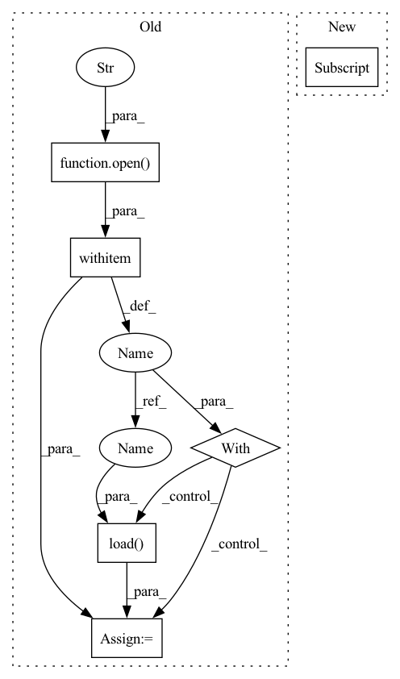

Pattern ID :14576

Before Change
proj_path = join(cfg.dataset_path, test_scan_name, "proj")
proj_file = join(proj_path, str(frame) + "_proj.pkl")
if isfile(proj_file):
with open(proj_file, "rb") as f:
proj_inds = pickle.load(f)
probs = test_probs[j][proj_inds[0], :]
pred = np.argmax(probs, 1)
store_path = join(test_path, test_scan_name, "predictions",
After Change
cfg = self.cfg
for j in range(1):
// name = inputs["attr"]["name"]
name = inputs["attr"]["name"]
// print(name)
name_seq, name_points = name.split("_")
test_path = join(cfg.test_result_folder, "sequences")
In pattern: SUPERPATTERN
Frequency: 4
Non-data size: 6
Instances
Fragment ID: 47947803
Project Name: isl-org/open3d-ml
Commit Name: 1ada80a42a187a3eefcb45d2f70078570d50872d
Time: 2020-08-22
Author: yilingq@umd.edu
File Name: ml3d/datasets/semantickitti.py
M Class Name: SemanticKITTI
N Class Name: SemanticKITTI
M Method Name: save_test_result(3)
N Method Name: save_test_result(3)
M Parent Class:
N Parent Class:
M File Name: ml3d/datasets/semantickitti.py
N File Name: ml3d/datasets/semantickitti.py
M Start Line: 107
M End Line: 126
N Start Line: 108
N End Line: 129
'>
Before Change
proj_path = join(cfg.dataset_path, test_scan_name, "proj")
proj_file = join(proj_path, str(frame) + "_proj.pkl")
if isfile(proj_file):
with open(proj_file, "rb") as f:
proj_inds = pickle.load(f)
probs = test_probs[j][proj_inds[0], :]
pred = np.argmax(probs, 1)
store_path = join(test_path, test_scan_name, "predictions",
After Change
proj_inds = inputs["data"].reproj_inds[0]
// proj_inds = inputs.proj_inds
probs = results[proj_inds, :]
// probs = results[j][proj_inds, :]
pred = np.argmax(probs, 1)
'>
Fragment ID: 47947801
Project Name: isl-org/open3d-ml
Commit Name: 1ada80a42a187a3eefcb45d2f70078570d50872d
Time: 2020-08-22
Author: yilingq@umd.edu
File Name: ml3d/datasets/semantickitti.py
M Class Name: SemanticKITTI
N Class Name: SemanticKITTI
M Method Name: save_test_result(3)
N Method Name: save_test_result(3)
M Parent Class:
N Parent Class:
M File Name: ml3d/datasets/semantickitti.py
N File Name: ml3d/datasets/semantickitti.py
M Start Line: 107
M End Line: 126
N Start Line: 108
N End Line: 129
'>
Before Change
train_data = ujson.load(f)
test_file = test_data_dir + "test" + str(idx) + "_" + ".json"
with open(test_file, "r") as f:
test_data = ujson.load(f)
return train_data, test_data
After Change
test_file = test_data_dir + "test" + str(idx) + "_" + ".npz"
with open(test_file, "rb") as f:
test_data = np.load(f, allow_pickle=True)["data"].tolist()
return test_data
'>
Fragment ID: 47947800
Project Name: tsingz0/pfl-non-iid
Commit Name: 4f394efe04f30dbd3cab4278467631854f997903
Time: 2022-01-14
Author: 2719584131@qq.com
File Name: system/utils/data_utils.py
M Class Name: AnonimousClass
N Class Name: AnonimousClass
M Method Name: read_data(3)
N Method Name: read_data(2)
M Parent Class:
N Parent Class:
M File Name: system/utils/data_utils.py
N File Name: system/utils/data_utils.py
M Start Line: 64
M End Line: 75
N Start Line: 63
N End Line: 82
'>
Before Change
def load_data():
import pickle
with open("/Users/mfe/Downloads/dataset.pkl","rb") as f:
data = pickle.load(f)
xs, us = data
us = np.expand_dims(us, axis=-1)
After Change
import matplotlib.pyplot as plt
for i in range(100):
plt.plot(xs[i,1:,0], xs[i,1:,1])
plt.show()
return xs, us
'>
Fragment ID: 47947807
Project Name: mit-acl/nn_robustness_analysis
Commit Name: 3f301ce67be70902840d23f40aecc98b346c412b
Time: 2021-02-16
Author: mfe@mit.edu
File Name: nn_closed_loop/nn_closed_loop/utils/nn.py
M Class Name: AnonimousClass
N Class Name: AnonimousClass
M Method Name: load_data(0)
N Method Name: load_data(0)
M Parent Class:
N Parent Class:
M File Name: nn_closed_loop/nn_closed_loop/utils/nn.py
N File Name: nn_closed_loop/nn_closed_loop/utils/nn.py
M Start Line: 48
M End Line: 52
N Start Line: 57
N End Line: 70
'>
Before Change
data_dir = "./data/imdb_datasets/movies_"
with open(data_dir + "{}".format(metapath) + ".pkl", "rb") as file:
movies_ = pickle.load(file)
col_dict = {"M": "movie_idx_x", "D": "director_idx_x", "A": "actor_idx_x"}
movies_.sort_values(by=col_dict[metapath[0]], inplace=True)
After Change
def intra_metapath_trans(self, g, metapath, metapath_idx_dict):
metapath_idx = metapath_idx_dict[metapath]
// encoder metapath instances
// intra_metapath_feat: feature matrix of every metapath instance of param metapath
intra_metapath_feat = self.encoder(g, metapath, metapath_idx)
'>
Fragment ID: 47947814
Project Name: bupt-gamma/openhgnn
Commit Name: 74981f4fd6ced6ddb99698e9aa45dcea27de098c
Time: 2021-05-27
Author: theheavenszhao@outlook.com
File Name: openhgnn/models/MAGNN.py
M Class Name: MAGNN_layer
N Class Name: MAGNN_layer
M Method Name: intra_metapath_trans(4)
N Method Name: intra_metapath_trans(3)
M Parent Class: nn.Module
N Parent Class: nn.Module
M File Name: openhgnn/models/MAGNN.py
N File Name: openhgnn/models/MAGNN.py
M Start Line: 284
M End Line: 290
N Start Line: 272
N End Line: 274